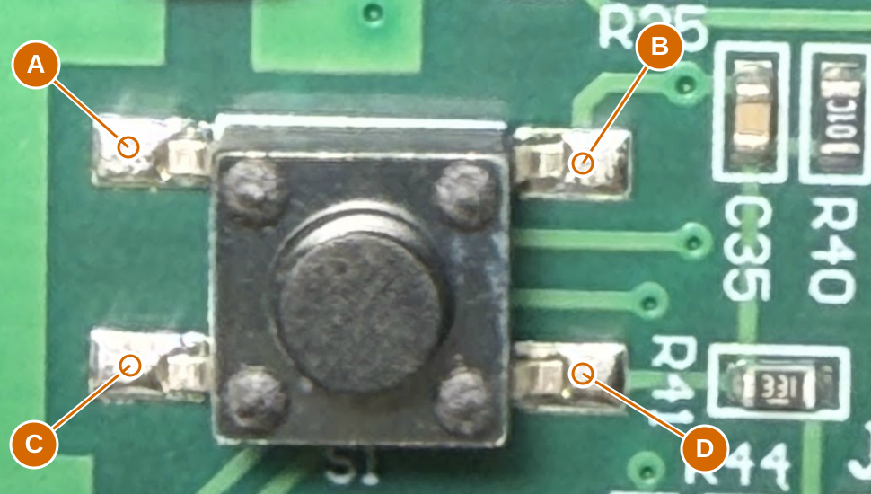

Disconnect battery and programmer. Use resistance mode (ohms). For each reading, probe the exposed solder contacts labelled A-D. Leave all components fitted.
Measure A-B and C-D with the button released. Then measure B-D first released and again while holding the button down. Report ohms or OL; if a released reading changes as C35 charges, give the settled reading or say changing.
S1: internal contacts and button action

A: S1 upper-left solder contact in this photo (physical TL).
B: S1 upper-right solder contact, next to C35 (physical TR).
C: S1 lower-left solder contact in this photo (physical BL).
D: S1 lower-right solder contact, next to R41 (physical BR).
ID
Red probe
Black probe
Button / state
Reading
B38
A
B
Released
B39
C
D
Released
B40
B
D
Released
B41
B
D
Held pressed
The current model predicts same-row common contacts (A-B and C-D) and B-D closing only while pressed. In-circuit parallel paths can give a finite resistance when released; the change on pressing distinguishes contact closure. These checks concern the switch interior, not visible resistor traces.
Copy results
Worksheet only; nothing is sent automatically. Copy before closing.
What follows
Resolve hidden paths and device behavior - Q8 supply connection now has 1-ohm support. Next: S1 internal contacts and pressed/released behavior. Q3 stays fitted; isolated identification is deferred. Three local-only PIC branches and antenna continuations remain.
Recover critical component values - 44 ceramic values; prioritize tuning and receiver after topology.
Finish interface and package mapping - LED channel/pad map and footprint; motor wire order. Exact physical fit is a later PCB qualification.
ERC: 1 retained U6/U6A output conflict. U6A is DNP; its regulator symbol remains by your request. Other source and library findings are resolved.